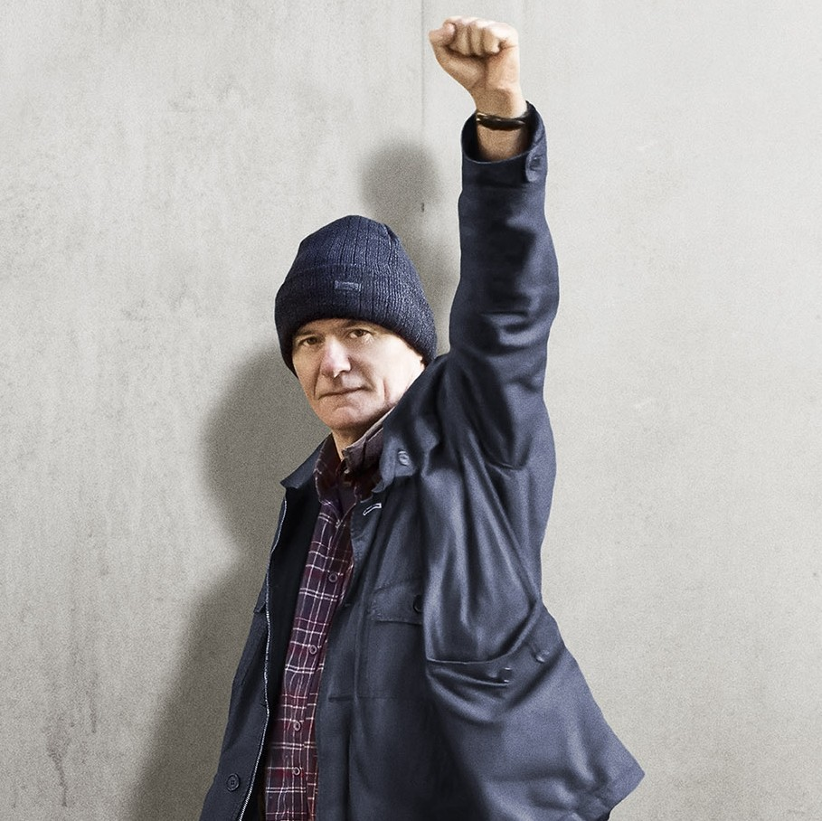

Je suis Ingénieur Informaticien. J'aime les ordinateurs.Windows 98 est il mieux que Windows 95 Là est la question, car... Je suis Ingénieur Informaticien. J'aime les ordinateurs. Windows 98, il vaut mieux que Windows 95. Windows et l'débugger il est mieux. Les procédures les fonctions. Le terminal, de la fréquence... Multiplexage!
I don't care
One flew over the cuckoo's nestIn 1963 Oregon, recidivist criminal Randle McMurphy is moved to a mental institution after serving a short sentence on a prison farm for statutory rape of a 15-year-old. Though not actually mentally ill, McMurphy hopes to avoid hard labor and serve the rest of his sentence in a relaxed environment. Upon arriving at the hospital, he finds the ward run by the steely, strict Nurse Ratched, who subtly suppresses the actions of her patients through a passive-aggressive routine, intimidating the patients. |
|
Moonrise KingdomWes Anderson’s seventh feature film, and in some ways it’s typical of all of them. Set in 1965 (with a few flashbacks to the previous year), “Moonrise” centers on the romance of two 12-year-olds, Sam Shakusky (debuting actor Jared Gilman) and Suzy Bishop (Kara Hayward, another newcomer). Sam has fled his Khaki Scout summer camp and Suzy the stifling home of her lawyer parents (Frances McDormand and Murray) to live together in the wilds of (the fictional) New Penzance Island, sustaining themselves on his outdoorsmanship and her sense of culture. |
|
|  |
I, Daniel BlakeAfter suffering a heart attack, Daniel Blake, a middle-aged carpenter, is medically instructed not to work by his doctor. After ‘signing on’ Daniel is told to seek employment, despite medically not being able to do so. A loophole prevents him from being able to receive any beneficial payments while Katie (Hayley Squires), a young mother who’s just moved up to Newcastle from London, finds herself in a similarly desperate situation. Left only with their friendship, the two journey toward any kind of solution. |